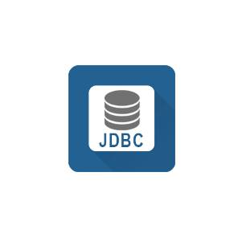
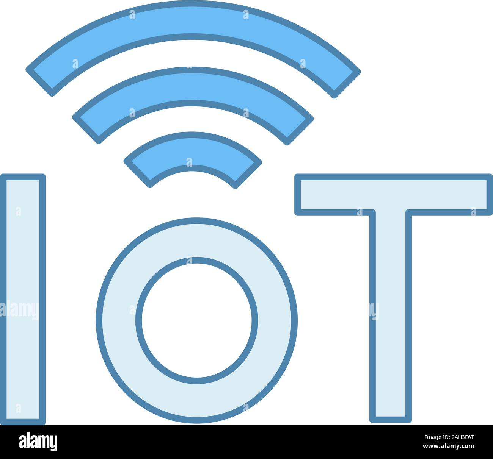
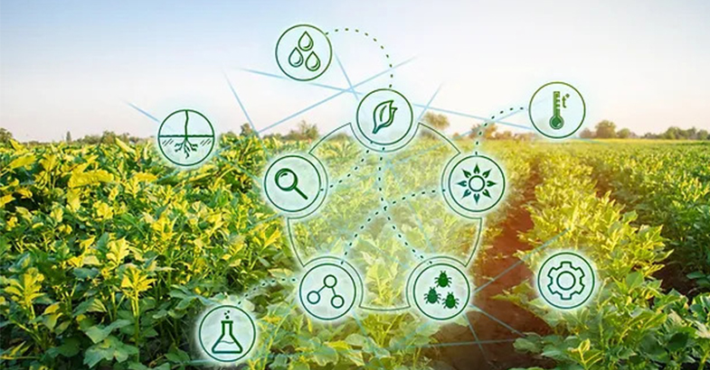
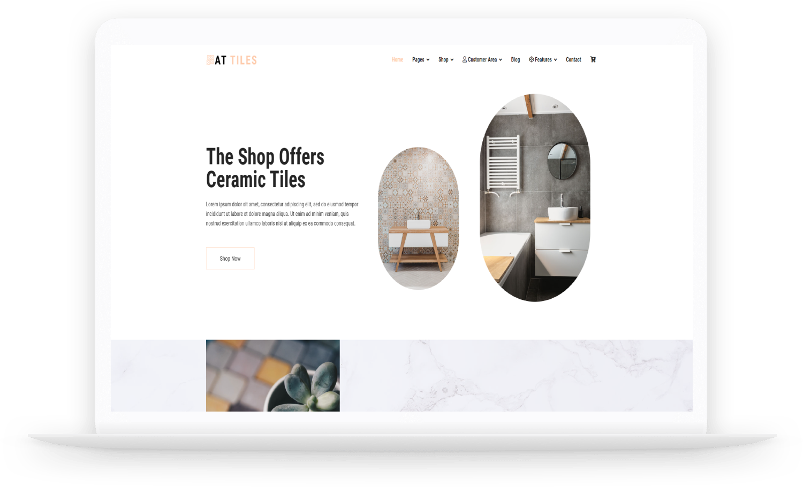

14
Verified
skills
4
Professional
Projects
500+
Problem
solved
15+
Additional
activities
Skills Acquired
Html |
 Css |
JavaScript |
 Java |
|
DataBase |
 Jdbc |
C language |
 Flutter |
|
 Python |
SpringBoot |
 Iot |
React |
My projects
Deep drip irrigation using IOT |
June-May (2024) |
DEEP DRIP® Watering Stakes are the best way to provide deep root watering for your plants or trees. By watering directly at the roots, DEEP DRIP® will help you conserve up to 50% of your outdoor water use. The features of our project is Lower volume of water used in comparison with sprinkler irrigation. Lower energy costs of pumping. High levels of water use efficiency. This irrigation system mainly includes various technologies such as sensor technology, automatic control technology and computer technology |
|  |
|---|
SHOPING WEBSITE |
Nov-Dec (2023) |
This project is about an e-commerce website where a user can do shopping with a seamless experience. A user can choose a product as per his choice. He can filter the products by size as well as by the color he wants. You can customize this project’s animation as well as logic as per requirement. It’s one of the major projects you can use for your personal use as well as to present in your college. |
|  |
|---|
EXPENSIVE TRACKING APPLICATION |
Jan-Mar (2024) |
In this project, we will be creating an application that can track our expenses. The application will have multiple accounts option so that the user can track their expenses more efficiently. The user can add new expenses with the date, description, and amount of the expense and save it to the database. We will be using Java Swing and SQLite for the database. |
SPEEDBREAKER GENERATOR |
April-May (2024) |
This project harvests energy from speed breaker by making gear arrangement and using electronic gadgets. Large amounts amount of electricity can be generated saving lot of money. And if implemented will be very beneficial for government . When vehicle is in motion it produces various forms of energy like, due to friction between vehicle?s wheel and road i.e. rough surface HEAT Energy is produced, also When vehicle traveling at high speed strikes the wind. The principle involved is POTENTIAL ENERGY TO ELECTRICAL ENERGY CONVERSION. There is a system to generate power by converting the potential energy generated by a vehicle going up on a speed breaker into kinetic energy. When the vehicle moves over the inclined plates, it gains height resulting in increase in potential energy, which is wasted in a conventional rumble strip. When the breaker comes down, then crank a lever fitted to a ratchet-wheel type mechanism (a angular motion converter) which in turn rotates a geared shaft loaded with recoil springs. The output of this shaft is coupled to a dynamo to convert kinetic energy into electricity. We are looking forward to conserve the kinetic energy that gone wasted, while vehicles move. The number of vehicles passing over speed breaker on road is increasing day by day. Beneath speed breaker, setting up an electro-mechanical unit known to be power hump, could help us conserving this energy and use it for power generation. The electrical output can be improved by arranging these power humps in series. This generated power can be stored, by using different electrical devices. We can supply this energy to street lights, traffic lights, and nearby areas, and thus helps in country?s economy. We could make it more efficient, by also having a solar panels that provides for power needs while the vehicles were not moving. |